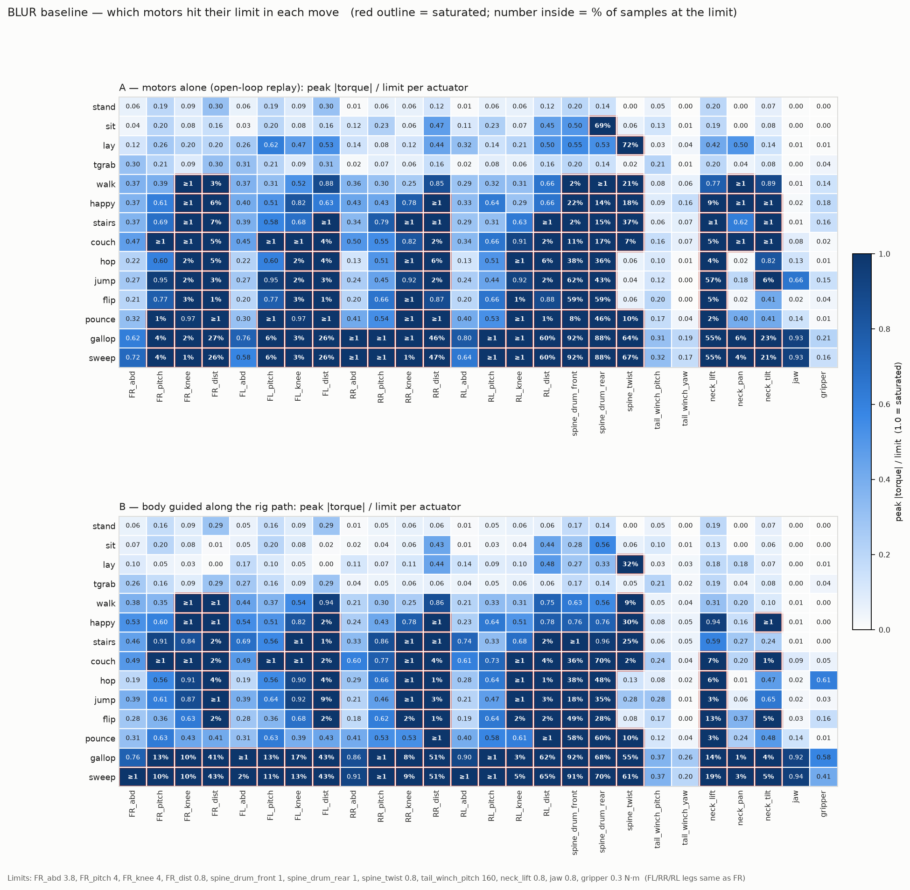
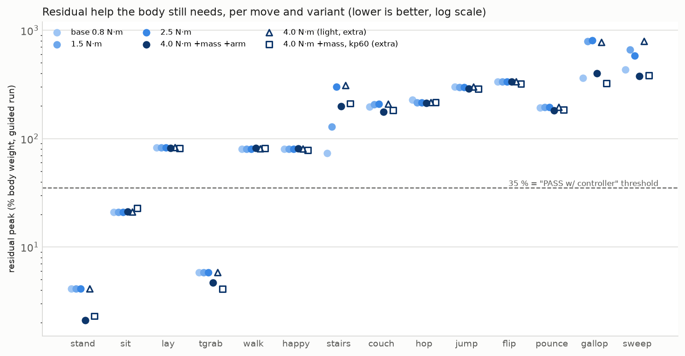
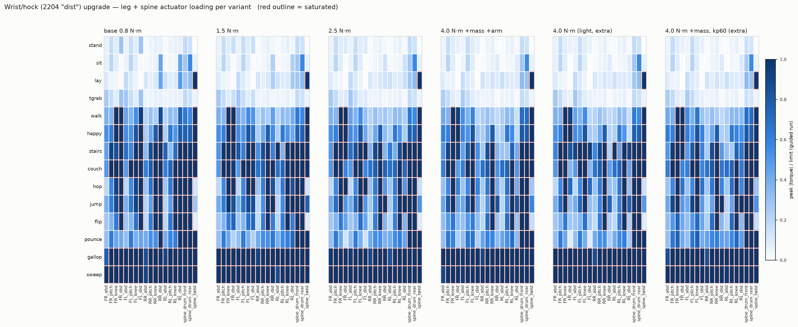

The 0.8 N·m 2204 wrists are the first motors to saturate in every dynamic move, so I rebuilt the model with 1.5, 2.5 and 4.0 N·m wrists (plus two control variants) and reran all 14 moves. Not one verdict changed. The wrist saturation was a symptom of open-loop replay fighting the ground, and the spine cable drums are the motor at its limit most of the time.
Everything lives in ~/Desktop/Arenda_Projects/BLUR/. The original model in blur_mujoco/ is byte-identical to the zip, report.json included (the rerun rewrote it with the same content).
| step | command (from blur_mujoco/) | result |
|---|---|---|
| env | uv venv --python 3.12 .venv, uv pip install mujoco numpy matplotlib | mujoco 3.16.0, numpy 2.5.4, matplotlib 3.11.2. No admin install needed. |
| verify | MjModel.from_xml_path('scene_flat.xml') | 77 bodies, 63 joints, 26 actuators (pounce / tailgrab: 78, 64, 26 with the ball) |
| viewer | python replay.py, python replay.py --move gallop --kinematic | both open and run; only a harmless Wayland libdecor-gtk warning |
| baseline | python replay.py --report (about 3 min) | identical to the shipped report.json, every field of every move |
| upgrade | experiments/run_all.sh (replay_exp.py, 14 processes, about 1 min per variant) | 7 reports, 196 simulations, no NaN, timestep unchanged at 0.5 ms |
One tooling bug on my side: the parallel runner first shared numpy's lazy npz handle across forked workers and crashed with "overlapped entries". Fixed by loading eagerly; the parallel path then reproduces report.json exactly for both the original model and the base variant copy.
cd ~/Desktop/Arenda_Projects/BLUR/blur_mujoco && source .venv/bin/activate
python replay.py # physics, standing on its own motors
python replay.py --move gallop --kinematic # the rig animation, no physics
python replay.py --move walk --guide 1 # physics + the soft body guide
python -m mujoco.viewer --mjcf scene_flat.xml # plain viewer, drag it around
python ../experiments/replay_exp.py --move gallop --model ../experiments/variants/w40 # any variantPeak |torque| / limit for all 26 actuators across the 14 moves, motors alone (A) and with the body guided along the rig path (B). Red outline = saturated; the number inside is the share of samples at the limit.

Variants are edited copies under experiments/variants/. Only the four *_dist actuators, joints and the bodies that carry those motors change.
| variant | limit | dist-body mass | armature | servo kp / kd | note |
|---|---|---|---|---|---|
| base | 0.8 | as shipped (0.056–0.059 kg) | 5e-4 | 15 / 0.3 | control copy, reproduces report.json |
| w15 | 1.5 | unchanged | 5e-4 | 15 / 0.3 | limit only |
| w25 | 2.5 | unchanged | 5e-4 | 15 / 0.3 | limit only |
| w40 | 4.0 | +0.051 kg each (2806.5 module 0.099 vs 2204 0.048 kg; inertia recomputed with a 16.75 × 20.2 mm cylinder at the housing) | 1e-3 | 15 / 0.3 | the real 2806.5 swap; robot 3.245 → 3.449 kg |
| w40_light | 4.0 | unchanged | 5e-4 | 15 / 0.3 | extra: isolates the mass cost |
| w40_kp60 | 4.0 | +0.051 kg | 1e-3 | 60 / 1.5 | extra: is the 2204's soft servo gain the limit? |
| move | base 0.8 | 1.5 | 2.5 | 4.0 +mass | 4.0 light | 4.0 kp60 |
|---|---|---|---|---|---|---|
| stand, lay, tgrab | PASS | PASS | PASS | PASS | PASS | PASS |
| sit | PASS/ctrl | PASS/ctrl | PASS/ctrl | PASS/ctrl | PASS/ctrl | PASS/ctrl |
| walk, happy, stairs, couch, hop, jump, flip, pounce, gallop, sweep | FAIL | FAIL | FAIL | FAIL | FAIL | FAIL |
Open-loop, walk / happy / gallop / sweep still fall in all six variants; path errors move by a few percent either way.
| move | base 0.8 | 1.5 | 2.5 | 4.0 +mass | 4.0 light | 4.0 kp60 |
|---|---|---|---|---|---|---|
| stand | 4 | 4 | 4 | 2 | 4 | 2 |
| sit | 21 | 21 | 21 | 21 | 21 | 23 |
| lay | 83 | 83 | 83 | 82 | 83 | 82 |
| tgrab | 6 | 6 | 6 | 5 | 6 | 4 |
| walk | 80 | 80 | 80 | 81 | 80 | 81 |
| happy | 80 | 80 | 80 | 81 | 80 | 79 |
| stairs | 73 | 129 | 302 | 198 | 309 | 211 |
| couch | 198 | 207 | 208 | 176 | 208 | 182 |
| hop | 228 | 215 | 215 | 213 | 215 | 215 |
| jump | 301 | 299 | 299 | 289 | 299 | 286 |
| flip | 334 | 335 | 335 | 334 | 335 | 322 |
| pounce | 192 | 194 | 194 | 182 | 194 | 185 |
| gallop | 364 | 794 | 810 | 402 | 773 | 325 |
| sweep | 435 | 662 | 584 | 378 | 789 | 382 |


| move | base 0.8 | 4.0 +mass (w40) |
|---|---|---|
| walk | spine_twist 9 %, FR_knee, FR_dist | spine_twist 17 %, FR_knee |
| happy | spine_twist 30 %, FL_dist 2 %, FR_dist 1 % | spine_twist 31 %, FR_knee, FR_dist |
| stairs | spine_twist 25 %, RL_dist 2 %, FR_dist 2 % | spine_twist 29 %, FL_knee 8 %, FR_knee 4 % |
| couch | spine_drum_rear 70 %, spine_drum_front 36 %, neck_lift 7 % | spine_drum_rear 71 %, spine_drum_front 32 %, neck_lift 6 % |
| hop | spine_drum_rear 48 %, spine_drum_front 38 %, neck_lift 6 % | spine_drum_rear 51 %, spine_drum_front 48 %, neck_lift 5 % |
| jump | spine_drum_rear 35 %, spine_drum_front 18 %, FL_dist 9 % | spine_drum_rear 36 %, spine_drum_front 14 %, neck_lift 5 % |
| flip | spine_drum_front 49 %, spine_drum_rear 28 %, neck_lift 13 % | spine_drum_front 62 %, spine_drum_rear 29 %, neck_lift 14 % |
| pounce | spine_drum_rear 60 %, spine_drum_front 58 %, spine_twist 10 % | same |
| gallop | spine_drum_front 92 %, spine_drum_rear 68 %, RL_dist 62 % | spine_drum_front 93 %, spine_drum_rear 75 %, spine_twist 54 % |
| sweep | spine_drum_front 91 %, spine_drum_rear 70 %, RL_dist 65 % | spine_drum_front 92 %, spine_drum_rear 79 %, spine_twist 61 % |
All six variants with saturation counts are in tables.md.
Where the number sits below the limit it is a real demand. Where it equals the limit the servo railed again.
| move | 1.5 | 2.5 | 4.0 +mass | 4.0 light | reading |
|---|---|---|---|---|---|
| stand, sit, lay, tgrab | 0.23–0.39 | same | same | same | the 2204 is fine for static work, 2× margin |
| flip, pounce | 1.09 | 1.09 | 1.34 | 1.09 | bounded, about 1.1–1.3 N·m |
| couch | 1.50 (rail) | 1.87 | 2.07 | 1.87 | bounded, about 1.9–2.1 N·m |
| hop | rail | 2.50 (rail) | 2.37 | 2.82 | about 2.4–2.8 N·m |
| jump | rail | rail | 3.29 | 2.96 | about 3.0–3.3 N·m |
| walk, happy, stairs, gallop, sweep | rail | rail | 3.7–4.0 (rail) | rail | unbounded: the servo winds up against a mis-timed foot contact |
With kp = 15 N·m/rad, 3.7 N·m means a 0.25 rad tracking error at the wrist. The foot is on the ground while the animation says it should be moving, and the servo pushes against the floor. In those moves the 0.8 N·m limit was acting as a clutch. Removing the clutch makes the body fight the ground harder, which is why stairs, gallop and sweep get worse at 1.5 and 2.5 N·m, and why no wrist torque changes the walk residual (80 % in every variant).
Smallest upgrade that fixes the most moves: none of them fixes any move. The verdict table is identical across all six variants, including the extras. The baseline wrist saturation was real but it was a symptom.
If the question is instead what wrist torque a controller would need, the bounded demands say: 1.5 N·m covers flip and pounce, about 2.1 N·m covers couch, 2.8 N·m hop, 3.3 N·m jump. Walk and gallop cannot be read from open-loop replay at all.
New bottleneck after the upgrade (w40): the spine cable drums at 1.0 N·m, at the limit for 93 % / 75 % of gallop samples, 71 % of couch, about 50 % of hop and 62 % of flip. Then spine twist at 0.8 N·m (17–31 % of samples in walk, happy and stairs; 54–61 % in gallop and sweep). Then the front knees at 4.0 N·m (4–9 % of samples in walk, happy and stairs). The 0.204 kg of extra foot mass costs nothing measurable (stand and tgrab residual 4 → 2 % and 6 → 5 %, open-loop stand error 8 → 5 mm). Raising the wrist servo gains to the hip values changes nothing either.
Do not buy wrist motors on this evidence. Every dynamic failure is a control failure: the body is 80 % of body weight off its path in walk with zero sensitivity to wrist torque, and the spine drums are railing because the spine is being asked to carry a body the legs are not supporting.
Keep the 2204s for now. Record the bounded demands (1.1 / 2.1 / 2.8 / 3.3 N·m for flip-pounce / couch / hop / jump) as the spec to revisit once a controller produces real contact timing. Look at the spine drum limit (1.0 N·m) before the wrists: it is the motor at its limit most of the time in every dynamic move in every variant.
Goal: walk and gallop on the flat scene with the as-shipped motors, measured by the same residual (target 0, no guide) and by actual forward speed against the rig's.
Port blur.xml to MJX. The model has 63 joints with fixed tendons (spine drums, twist, tail winches), elliptic cones and implicitfast; MJX lists support for all of these (verify on day 1 by loading the model), but the 0.5 ms timestep and the 9-joint cable tail make it an expensive environment. The first policy should freeze the tail, neck and jaw at the stand pose and control the 16 leg servos plus 3 spine actuators (19-D action, PD targets). Observation: IMU quaternion, gyro and accel, joint positions and velocities, foot touch, gait phase, commanded velocity. Reward: tracked velocity, upright, foot clearance, torque and action-rate penalties, with the rig's walk and gallop joint angles as an imitation term so the gait looks like BLUR's rig. PPO on the Brax / MuJoCo Playground recipe, with domain randomisation on mass, friction, motor gain and latency.
Convex MPC on a single-rigid-body model (the standard quadruped MPC, 10–20 ms horizon, 50 Hz) with a Raibert-style foot placement planner and a joint PD layer underneath. Works for walk and trot within 2–3 weeks of engineering, runs on CPU, no training. It does not naturally handle the cable spine, the tail or the gallop's flight phase; those need whole-body MPC (3–4 weeks more) or go back to RL.
Recommendation: Route A for walk first. It answers the real question (what torque a controlled BLUR needs at the wrists and the spine) in one week, and gallop follows on the same stack. Route B is the fallback if the MJX port of the tendon spine turns out to be the slow part.
BLUR/
RESULTS.md the written report (this page)
tables.md every table, all six variants
baseline.png 26 actuators × 14 moves, motors alone + guided
upgrade.png / upgrade_residual.png variant heatmaps / residual dot chart
baseline/ report_original.json (shipped), report_run.log (rerun, identical), report_full.json (per-actuator)
blur_mujoco/ the zip contents, untouched, + .venv (python 3.12)
experiments/ replay_exp.py (--model/--out/--jobs), make_variants.py, plot_reports.py, make_table.py, run_all.sh,
variants/{base,w15,w25,w40,w40_light,w40_kp60}/, results/*.json + *.log